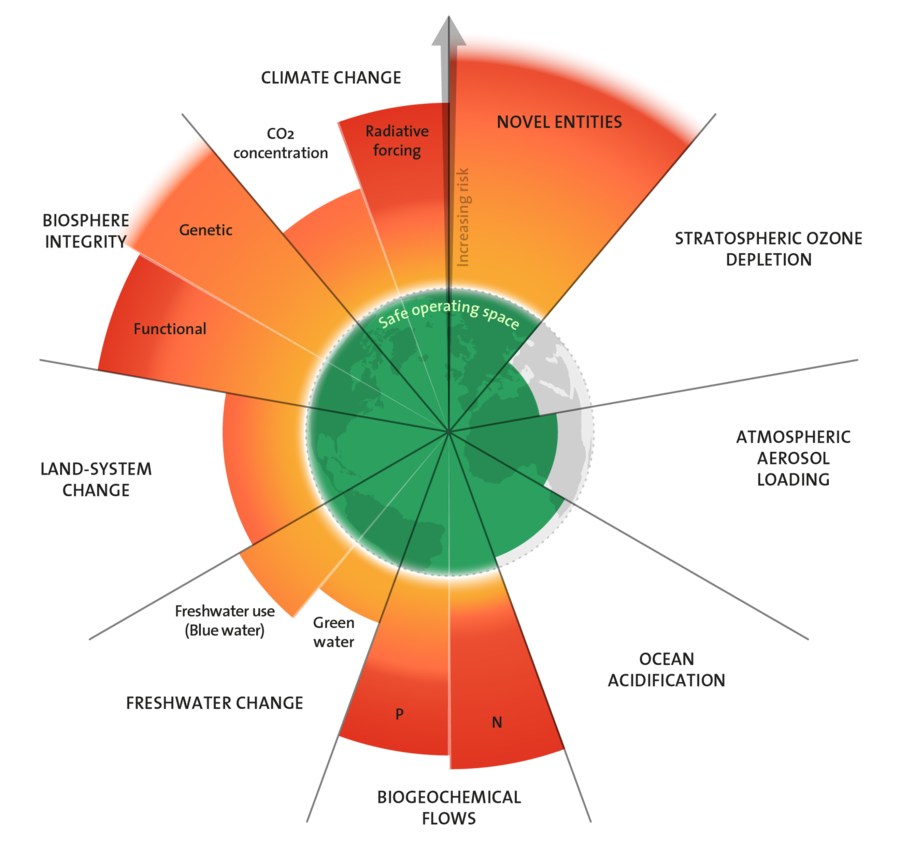

The planetary boundaries concept presents a set of nine planetary boundaries within which humanity can continue to develop and thrive for generations to come. These nine boundaries are: novel entities, stratospheric ozone depletion, atmospheric aerosol loading, ocean acidification, biogeochemical flows, freshwater change, land-system change, biosphere integrity, and climate change.
 As can be seen in the figure we are currently beyond six of the nine planetary boundaries. Important to note is that the notion of planetary boundaries can include other models than the nine boundaries above.Connections: